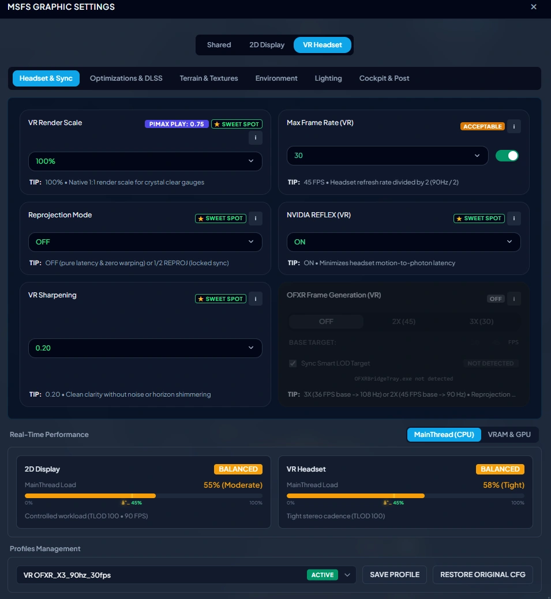
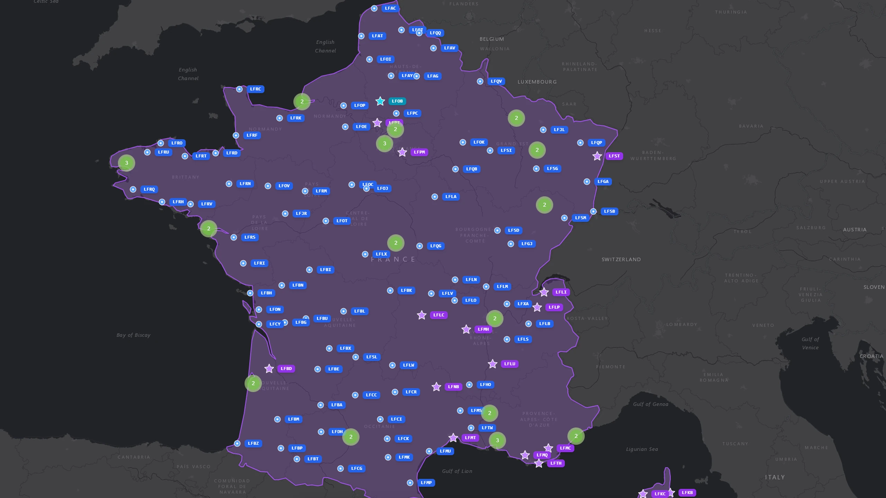
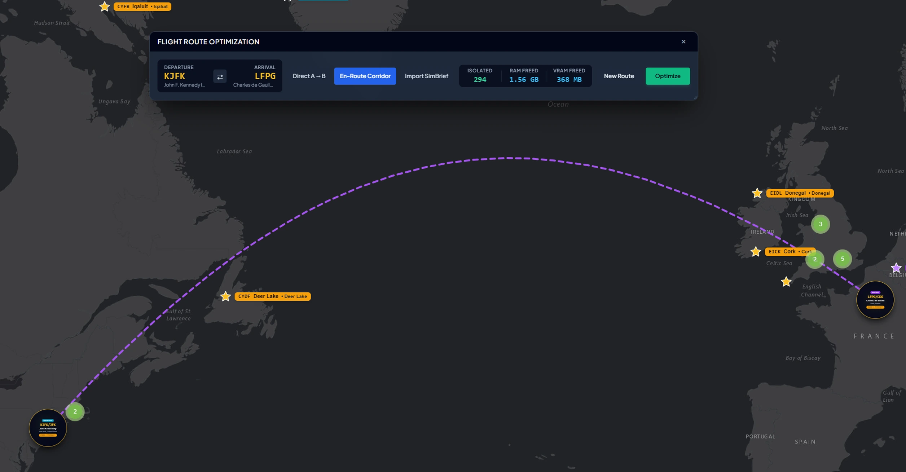
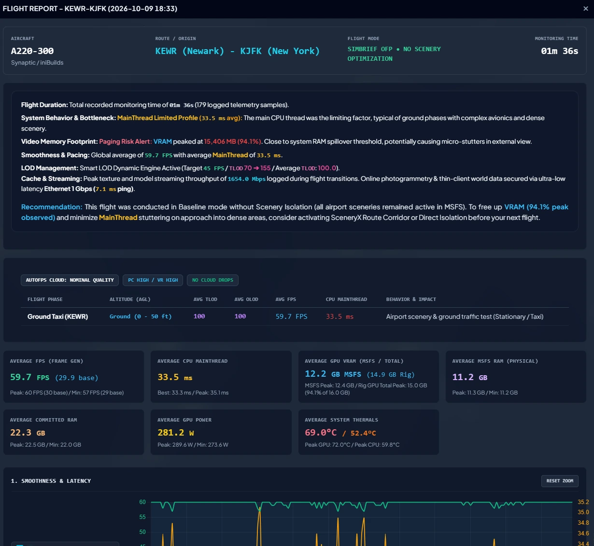
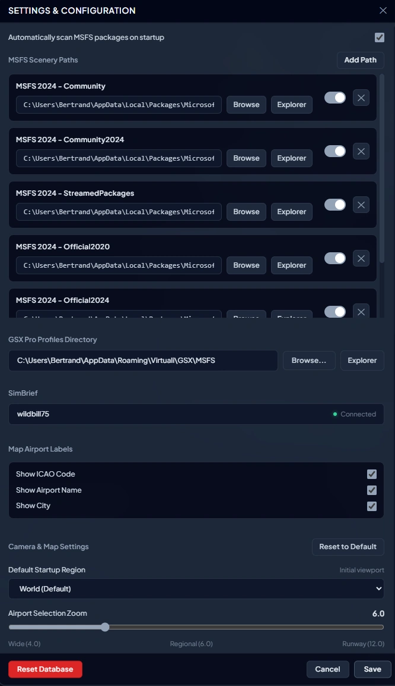

Take Control of Your Simulator.
Stop digging through buried in-game menus, deciphering cryptic config files, and watching contradictory setup guides. SceneryX unifies MSFS’s most tedious, scattered performance and graphic settings into one coherent dashboard—engineered specifically to optimize both standard 2D displays and VR headsets without endless rebooting.
Zero Bloat. Instant Loading.
Import your SimBrief flight plan and isolate only the departure, destination, alternate, and route-relevant scenery. Gigabytes of unused addons stay parked—halving initial boot times and freeing critical system RAM and VRAM for an ultra-smooth flight.
Butter-smooth landings in 4K & VR
Real-time SimConnect automation scales Terrain and Object LOD progressively through every flight phase. Enjoy crisp draw distances at cruise, while automatically backing off polygon load on short final to relieve the CPU MainThread bottleneck right before touchdown.
One Centralized Dashboard for 2D Cockpits and VR Headsets
End the configuration nightmare. Eliminate contradictory YouTube setup tutorials, avoid manual edits to UserCfg.opt, and stop restarting your simulator four times just to test a single shadow setting.

One Centralized Dashboard
Replace dozens of clunky simulator sub-menus and fragile config file edits with clean, instant, responsive toggles. Everything from DLSS/FSR presets, DirectX 12 optimizations, rolling cache controls, to photogrammetry streaming is consolidated into one coherent panel.
Tailored Dual Profiles (2D vs. VR)
Maintain separate, optimized profiles for 4K desktop flying and immersive VR sessions. Switch configurations in a single click without messing up your field of view, render scale, or OpenXR frame-timing.
"My Rig" Smart Auto-Tuning
Hardware-aware profiling analyzes your CPU core topology, GPU VRAM limits, and storage throughput. It dynamically balances CPU draw calls against GPU rasterization based on your exact hardware, eliminating guesswork.
The Next-Gen Scenery Hub & GSX Pro Engine
Bypass the sluggish native Content Manager. Manage your Community folders, Official packages, and cloud assets with total clarity and zero conflict.
Marketplace vs. Local Package De-anonymization
Cut through the opaque simulator Content Manager. SceneryX establishes a clear visual distinction between physical packages (Community, Official) and encrypted/streamed MSFS 2024 assets (StreamedPackages). Gain instant visibility into what is installed locally, cached on NVMe, or streaming over your connection.
Instant Drag-and-Drop GSX Pro Engine
Drag and drop .ini files or .zip archives directly into SceneryX. Our heuristic parser automatically identifies the matching airport and publisher variant (distinguishing default Asobo from Flightbeam or iniBuilds), auto-placing it into %APPDATA%\Virtuali\GSX. It audits and cleans corrupted profiles automatically.
Conflict & Duplicate Airport Detector
Continuous real-time scanning catches overlapping BGL files, duplicate ICAO codes, and competing airport boundaries (such as default World Update scenery colliding with payware). Flashing visual warning badges and 1-click conflict arbitration permanently eliminate elevation tears, flickering textures, and double runways.
Direct Store & Community Gateways
Access 1-click direct links to the original Flightsim.to download pages (for freeware) or official publisher stores (simMarket, Orbx, Flightbeam, iniBuilds, Aerosoft, Contrail) straight from the airport card. Review release notes and inspect pricing effortlessly.

Cure the MainThread CPU Bottleneck for Good
Why GPU upgrades don't fix landing stutters—and how SceneryX dynamically restores CPU headroom when you need it most.

MainThread CPU Bottleneck Solution
When approaching dense international hubs, thousands of airport buildings, ground traffic assets, and terrain meshes flood a single CPU thread with draw calls. Even on an RTX 4090, if the MainThread latency spikes above 16.6ms, your frames drop to a stuttering halt. SceneryX dynamically relieves this burden before the bottleneck can form.
SimBrief Flight Corridor Isolation
Why load 300 gigabytes of sceneries in Tokyo and Sydney when you are flying London to Paris? SceneryX imports your active SimBrief OFP, draws a tactical virtual buffer around your route, and isolates only the departure, arrival, alternate, and en-route scenery packages. Unused addons remain parked, reclaiming up to 14+ GB of system memory.
Smart Dynamic LOD (Level of Detail)
Through real-time SimConnect altitude automation, SceneryX dynamically governs Terrain LOD (TLOD) and Object LOD (OLOD). Enjoy crisp, sweeping 300+ TLOD draw distances at FL370 cruise altitude. As you descend through 3,000 ft AGL towards short final, SceneryX gently reduces draw distance, guaranteeing smooth 60 FPS touchdowns.
Cockpit Telemetry and Controls. Zero Alt-Tabbing.
Native integration into the MSFS Top Toolbar. Monitor simulator performance, override dynamic LOD values, and switch profiles right from the captain's seat in both 2D monitors and VR headsets.
Native Toolbar Widget (2D & VR)
Designed for full immersion. Operates cleanly in standard desktop windows or floating inside your VR headset cockpit with direct VR controller interaction and zero need to take off your headset.
Live Smart LOD Adjustments
Inspect real-time AGL altitude and make immediate LOD adjustments inside the cockpit. Switch presets on the fly: Cruise, Approach, Short Final, or Locked 60 FPS.
Interactive Telemetry Dashboard
Live frametime oscilloscope tracking CPU MainThread latency against GPU render intervals, live frame rates, and micro-stutter occurrence count with absolute precision.

100% Non-Destructive Architecture
Your simulator installation is sacred. SceneryX operates with complete architectural safety—no permanent file tampering, no folder renaming risks, and zero background baggage.
Zero Folder Renaming
Unlike legacy addon managers that rename physical folders (risking orphaned dependencies or broken symlinks), SceneryX leaves your file system and directories 100% untouched.
Dedicated Session Manifest
SceneryX orchestrates scenery activation via safe, dedicated session Content.xml manifests. The official simulator core configuration remains untouched and read-only.
SimConnect In-Memory Scaling
LOD transitions and graphics scaling occur dynamically in runtime memory through official SimConnect APIs. No binary patching or persistent file alterations.
1-Click Instant Reset
Close SceneryX after setup with settings persisting, or click "Restore All" at any time to instantly revert your entire library to its original state in under one second.
Preserving Your Simulator Root Integrity
SceneryX reads and organizes sceneries across five independent storage roots: Community, Community2024, StreamedPackages, Official2020, and Official2024. Your physical game folders and binaries remain completely untouched and read-only.

Tested on Flight Simulation's Most Demanding Sceneries
From dense international hubs with hundreds of jetways to heavy photogrammetry cities, SceneryX sustains 60 FPS locked where vanilla MSFS stutters.
Dubai International (OMDB)
Locked 60 FPS under massive terminal polygon loads, dynamic jetways, and AI heavy traffic.
Palma de Mallorca (LEPA)
Dynamic Smart LOD reduces terrain draw calls on short final for a silky-smooth touchdown.
Busy Apron & Concourse Ramp
Automated GSX Pro profile matching and isolated route sceneries eliminate apron frame drops.
Heraklion N. Kazantzakis (LGIR)
Crisp terminal architecture and ground textures rendered without memory leaks.
Provisional Early Access Launch Price: €8.99
Built for Windows 10 / 11. 100% non-destructive. Full lifetime access to the desktop application, in-game cockpit panel, and the complete Flight Optimizer suite, with ongoing updates and no mandatory monthly subscription.
Secure checkout via Lemon Squeezy. Instant Windows license delivered straight to your email.
Frequently Asked Questions
Detailed, technical answers to common questions about SceneryX architecture, performance optimizations, and simulator compatibility.
UserCfg.opt file or endure multiple simulator restarts. SceneryX introduces an independent dual-profile system. You can establish crisp 4K desktop parameters (DLSS Quality, ultra shadows, high TLOD) for standard monitor flying, while maintaining a dedicated OpenXR configuration (foveated rendering, custom per-eye render resolution, motion reprojection toggles) for your VR headset. SceneryX synchronizes these settings safely with zero risk of config corruption and without requiring repeated simulator reboots.
StreamedPackages containers labeled with cryptic cryptographic GUIDs. The native simulator Content Manager gives you no clear distinction between what is cached on disk and what streams over the wire. SceneryX de-anonymizes these packages by inspecting simulator manifest caches. It clearly displays whether an airport is hosted on your local NVMe drive (Community or Official) or streamed from the cloud. This gives you absolute control to prioritize high-fidelity local payware over low-resolution streamed photogrammetry and prevents duplicate scenery collisions.
.ini or .zip profile into SceneryX, the engine reads the airport ICAO, terminal gates, parking positions, and author signature. It automatically differentiates between default Asobo airports and third-party payware editions (e.g. Flightbeam, Pyreegue, or iniBuilds), moving the profile into the exact folder path at %APPDATA%\Virtuali\GSX\MSFS. Furthermore, SceneryX runs a health audit to identify and eliminate obsolete, duplicate, or corrupted GSX profile files.
Content.xml manifests, while Dynamic Smart LOD scaling operates exclusively in runtime memory through official SimConnect APIs. Closing SceneryX or clicking the "Restore All" button instantly restores your simulator to its factory configuration in under one second.